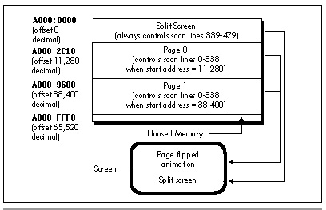

| Previous | Table of Contents | Next |
There’s a hitch, though, and that hitch is knowing exactly when it is that the page has flipped. The page doesn’t flip the instant that you set the Start Address registers. The VGA loads the starting offset from the Start Address registers once before starting each frame, then pays those registers no nevermind until the next frame comes around. This means that you can set the Start Address registers whenever you want—but the page actually being displayed doesn’t change until after the VGA loads that new offset in preparation for the next frame.
The potential problem should be obvious. Suppose that page 1 is being displayed, and you’re updating page 0. You finish drawing to page 0, set the Start Address registers to 0 to switch to displaying page 0, and start updating page 1, which is no longer displayed. Or is it? If the VGA was in the middle of the current frame, displaying page 1, when you set the Start Address registers, then page 1 is going to be displayed for the rest of the frame, no matter what you do with the Start Address registers. If you start updating page 1 right away, any changes you make may well show up on the screen, because page 0 hasn’t yet flipped to being displayed in place of page 1—and that defeats the whole purpose of page flipping.
To avoid this problem, it is mandatory that you wait until you’re sure the page has flipped. The Start Address registers are, according to my tests, loaded at the start of the Vertical Sync signal, although that may not be the case with all VGA clones. The Vertical Sync status is provided as bit 3 of the Input Status 1 register, so it would seem that all you need to do to flip a page is set the new Start Address registers, wait for the start of the Vertical Sync pulse that indicates that the page has flipped, and be on your merry way.
Almost—but not quite. (Do I hear teeth gnashing in the background?) The problem is this: Suppose that, by coincidence, you set one of the Start Address registers just before the start of Vertical Sync, and the other right after the start of Vertical Sync. Why, then, for one frame the Start Address High value for one page would be mixed with the Start Address Low value for the other page, and, depending on the start address values, the whole screen could appear to shift any number of pixels for a single, horrible frame. This must never happen! The solution is to set the Start Address registers when you’re certain Vertical Sync is not about to start. The easiest way to know that is to check for the Display Enable status (bit 0 of the Input Status 1 register) being active; that means that bitmap-controlled pixels are being scanned onto the screen, and, since Vertical Sync happens in the middle of the vertical non-display portion of the frame, Vertical Sync can never be anywhere nearby if Display Enable is active. (Note that one good alternative is to set up both pages with a start address that’s a multiple of 256, and just change the Start Address High register and wait for Vertical Sync, with no Display Enable wait required.)
So, to flip pages, you must complete all drawing to the non-displayed page, wait for Display Enable to be active, set the new start address, and wait for Vertical Sync to be active. At that point, you can be fully confident that the page that you just flipped off the screen is not displayed and can safely (invisibly) be updated. A side benefit of page flipping is that your program will automatically have a constant time base, with the rate at which new screens are drawn synchronized to the frame rate of the display (typically 60 or 70 Hz). However, complex updates may take more than one frame to complete, especially on slower processors; this can be compensated for by maintaining a count of new screens drawn and cross-referencing that to the BIOS timer count periodically, accelerating the overall pace of the animation (moving farther each time and the like) if updates are happening too slowly.
So far, I’ve discussed page flipping in 640x350 mode. There’s a reason for that: 640x350 is the highest-resolution standard mode in which there’s enough display memory for two full pages on a standard VGA. It’s possible to program the VGA to a non-standard 640x400 mode and still have two full pages, but that’s pretty much the limit. One 640x480 page takes 38,400 bytes of display memory, and clearly there isn’t enough room in 64 K of display memory for two of those monster pages.
And yet, 640x480 is a wonderful mode in many ways. It offers a 1:1 aspect ratio (square pixels), and it provides by far the best resolution of any 16-color mode. Surely there’s some way to bring the visual appeal of page flipping to this mode?
Surely there is—but it’s an odd solution indeed. The VGA has a feature, known as the split screen, that allows you to force the offset from which the VGA fetches video data back to 0 after any desired scan line. For example, you can program the VGA to scan through display memory as usual until it finishes scan line number 338, and then get the first byte of information for scan line number 339 from offset 0 in display memory.
That, in turn, allows us to divvy up display memory into three areas, as shown in Figure 44.2. The area from 0 to 11,279 is reserved for the split screen, the area from 11,280 to 38,399 is used for page 0, and the area from 38,400 to 65,519 is used for page 1. This allows page flipping to be performed in the top 339 scan lines (about 70 percent) of the screen, and leaves the bottom 141 scan lines for non-animation purposes, such as showing scores, instructions, statuses, and suchlike. (Note that the allocation of display memory and number of scan lines are dictated by the desire to have as many page-flipped scan lines as possible; you may, if you wish, have fewer page-flipped lines and reserve part of the bitmap for other uses, such as off-screen storage for images.)

Figure 44.2 Memory allocation for mode 12h page flipping.
The sample program for this chapter uses the split screen and page flipping exactly as described above. The playfield through which the object bounces is the page-flipped portion of the screen, and the rectangle at the bottom containing the bounce count and the instructions is the split (that is, not animatable) portion of the screen. Of course, to the user it all looks like one screen. There are no visible boundaries between the two unless you choose to create them.
Very few animation applications use the entire screen for animation. If you can get by with 339 scan lines of animation, split-screen page flipping gives you the best combination of square pixels and high resolution possible on a standard VGA.
So. Is VGA animation worth all the fuss? Mais oui. Run the sample program; if you’ve never seen aggressive VGA animation before, you’ll be amazed at how smooth it can be. Not every square millimeter of every animated screen must be in constant motion. Most graphics screens need a little quiet space to display scores, coordinates, file names, or (if all else fails) company logos. If you don’t tell the user he’s/she’s only getting 339 scan lines of animation, he’ll/she’ll probably never know.
| Previous | Table of Contents | Next |